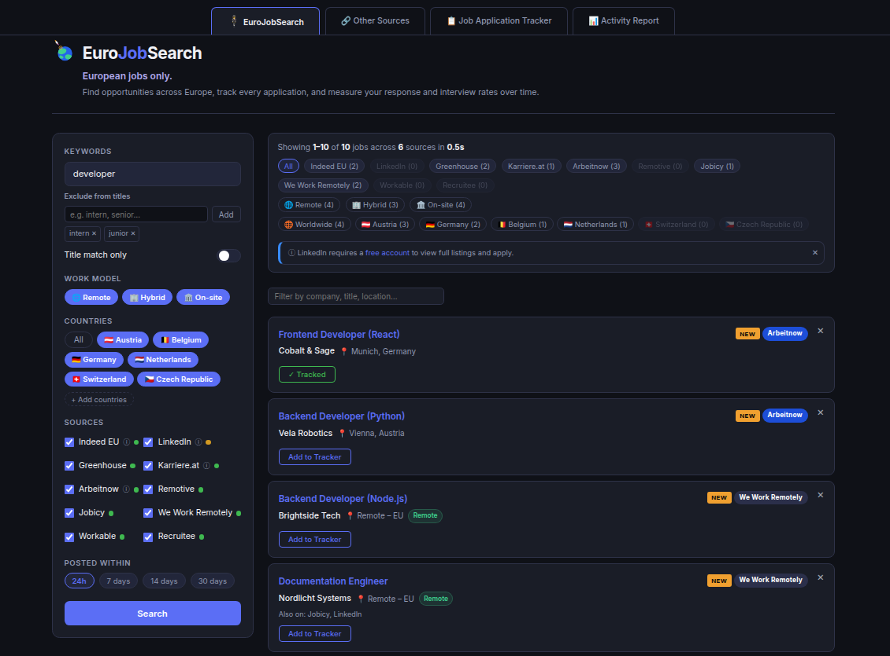
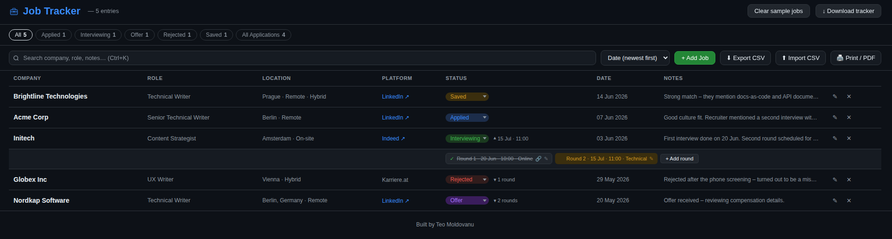
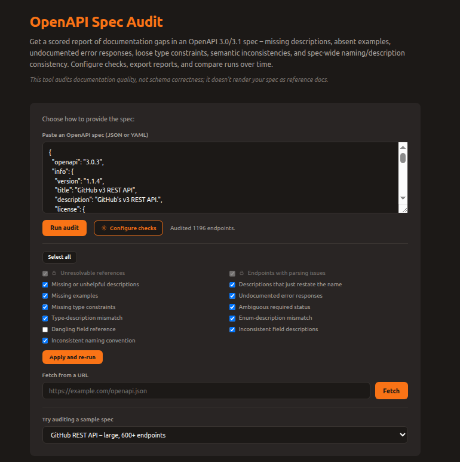
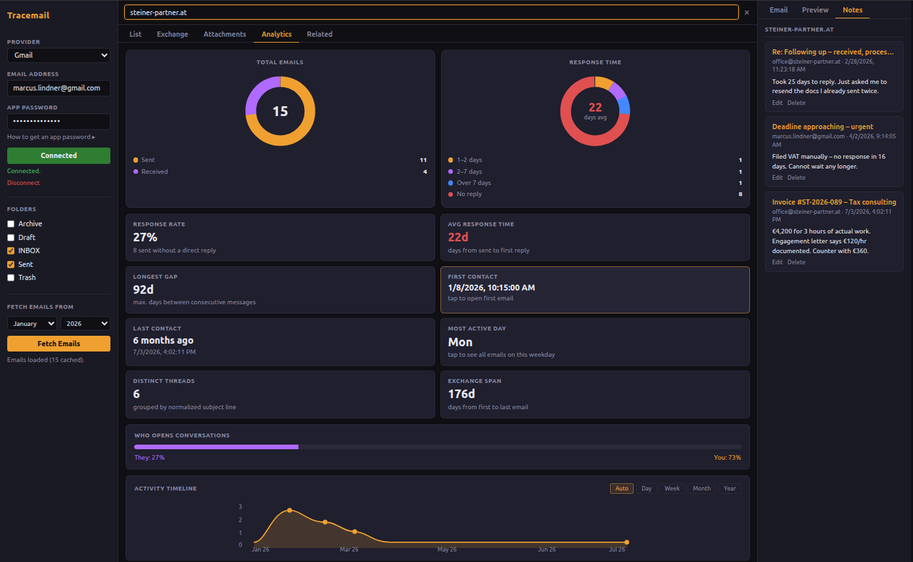
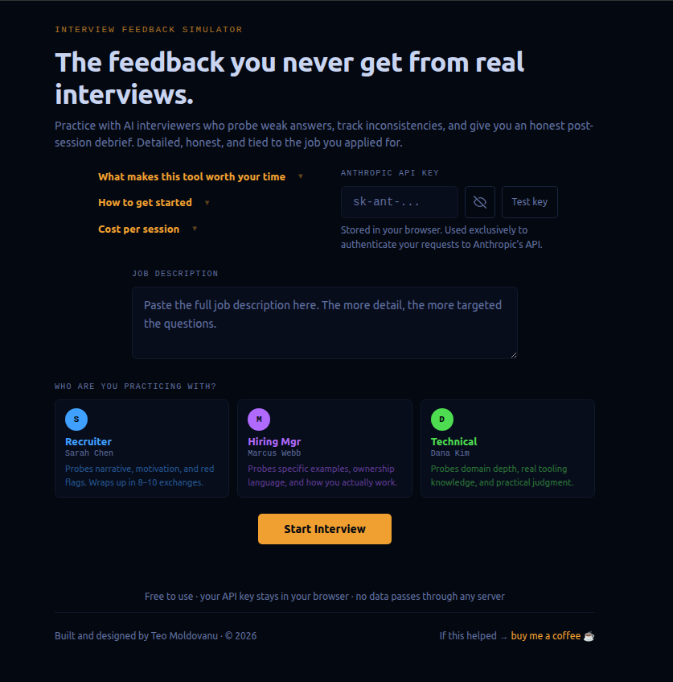
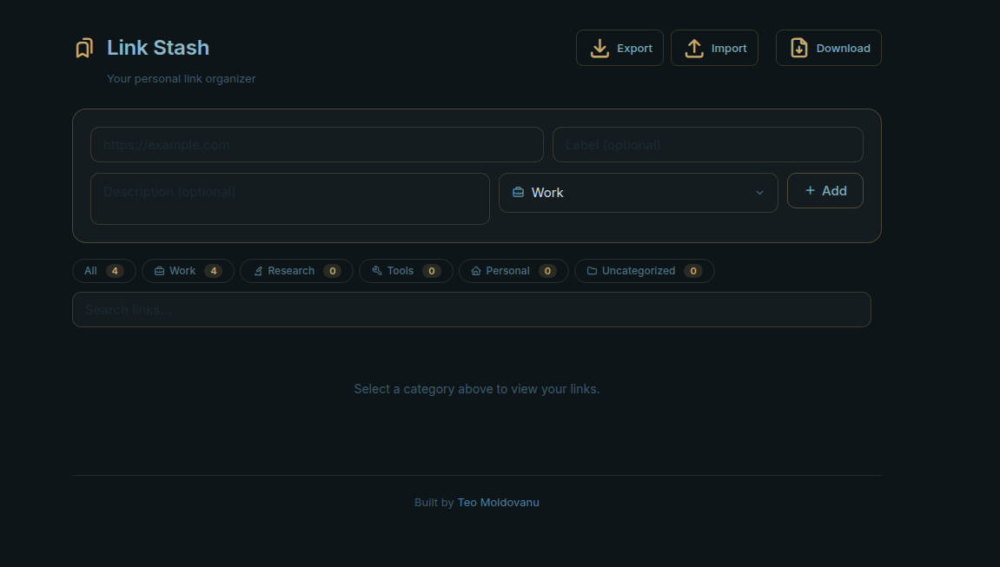
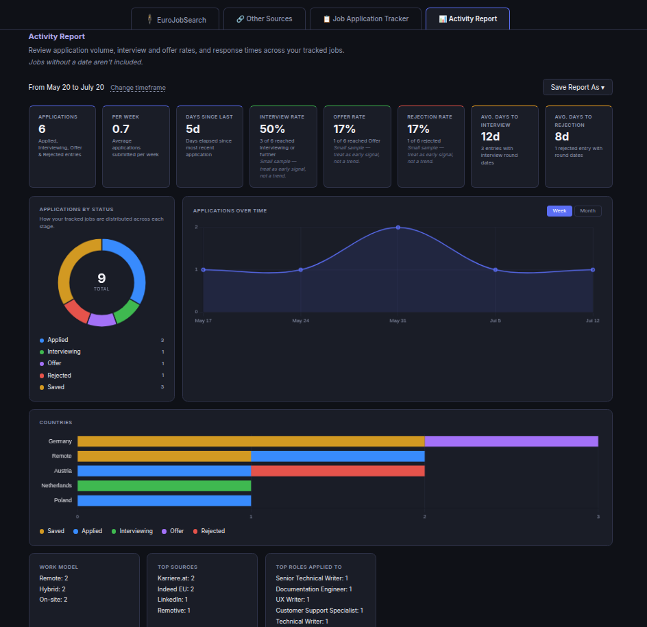
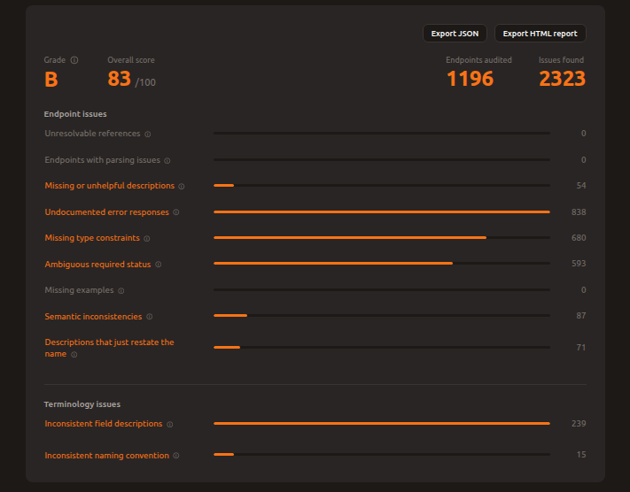

...that fit my needs, and share them with others for free.
I handle each tool end to end: architecture, implementation, testing, bug fixes, ongoing maintenance, and the documentation and UX copy that make them usable.
Claude and Claude Code handle execution. Every change gets reviewed before it ships.
Each project below solves a specific problem.

Aggregates job listings from ten European sources into one deduplicated, filterable view, tagged remote, hybrid, or onsite. Includes an application tracker with an activity dashboard for interview and response rates.

Tracks job applications by status (applied, interview, rejected, offer) with CSV and PDF export. Handy as proof of your job search for unemployment offices.

Scores OpenAPI specs for documentation quality, flagging missing descriptions, undocumented errors, ambiguous fields, and terminology inconsistencies. Includes a CI-ready CLI.

Investigates your inbox over IMAP to reconstruct correspondence in disputes. Runs entirely on your machine.

Helps you practice interviews with three AI personas that push back on weak answers. Gets you the honest feedback you need to figure out what went wrong and how to fix it.

Organizes bookmarks in a single file. Built for people juggling too many tabs across too many browsers.
Let's have a closer look at two of these tools, and the problems they solve.
Ten job sources return ten different shapes of data – different fields, formats, and inconsistent or missing location text. EuroJobSearch pulls all of it into one consistent format, filters out duplicate postings across sources, and works out whether a job is remote, hybrid, or onsite even when the listing doesn't say so directly.
Search matches comma-separated keywords at once, with filtering by country. New postings get flagged so you're not re-reading the same listings every day. A built-in application tracker rounds it out – save jobs, track status from applied to offer, log individual interview rounds, and export everything as proof of your job search. An activity dashboard turns that history into interview and response rates over time.

Most tools built around API documentation simply display it. My tool checks whether it's actually good. Are the descriptions clear? Are there examples? Are error responses explained? Is it obvious what's required or optional? Each issue is weighted by how much it would actually confuse a developer reading the docs – a missing description counts for more than a missing example.
Running it against a large real-world API (GitHub's, about 1,200 endpoints) and fixing what it found raised the documentation score from 74 out of 100 to 80. A command-line version runs the same checks automatically, so a team can catch these issues before every release.

What's in my actual workflow.
I'm interested in collaborating on AI-driven work: building tools that help people, testing and catching bugs, or refining UX copy and language, while gaining expertise in the AI field.